Echipa Noastră
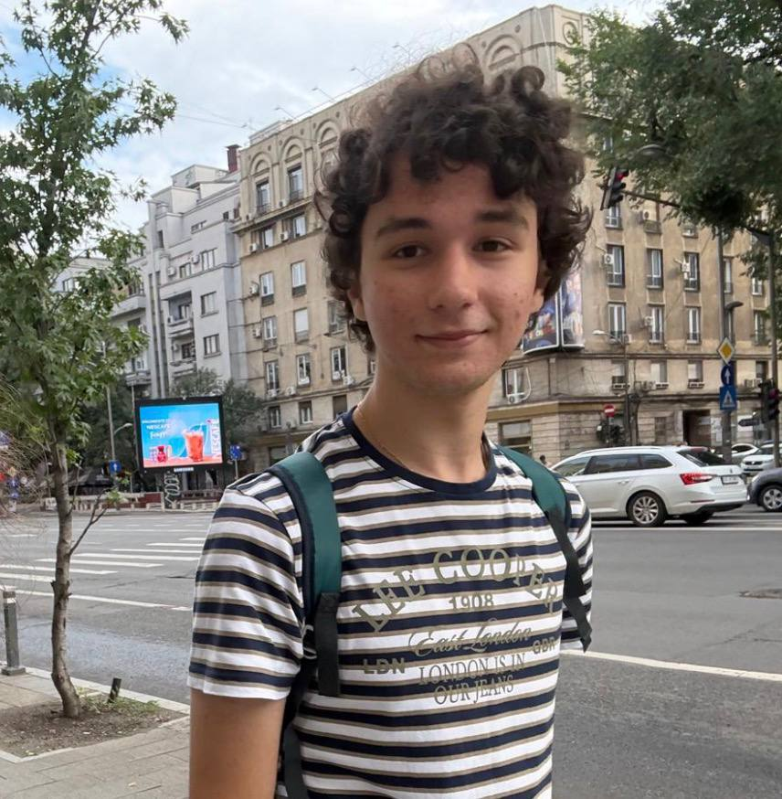
Cristian Vergelea
Hello! Sunt Cristi, elev in clasa a 11-a la ICHB. În anii trecuți, am obținut mai multe medalii de argint si aur la olimpiade, printre care una la JBMO. Sper să aflați cât mai multe idei la cursuri și să vă surprind cu lecții mai puțin obișnuite. Abia aștept să vă cunosc și să începem să lucrăm împreună!
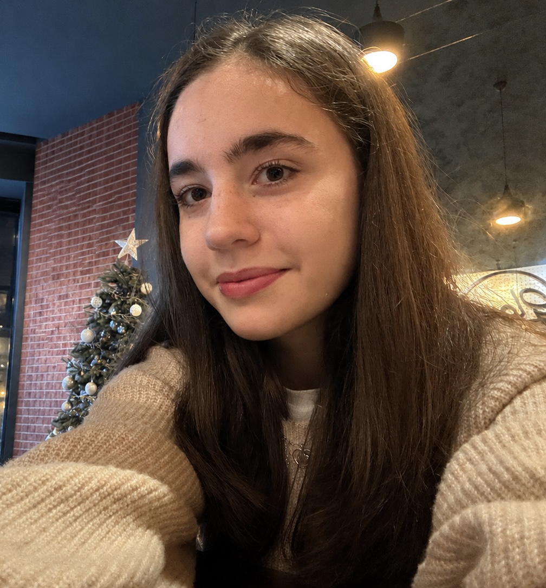
Maria Gorgan
Bună! Sunt Maria, elevă în clasa a XI-a la ICHB. Sunt pasionată de matematică încă din clasele mici și până acum am obținut medalii de aur și argint la olimpiada națională. Pe lângă matematică, îmi place mult să joc tenis, să ascult muzică şi ador dulciurile. Sunt o persoană răbdătoare şi răspund cu plăcere la orice întrebare. Abia aștept să ne vedem la cursuri și să vă prezint cât mai multe idei noi!
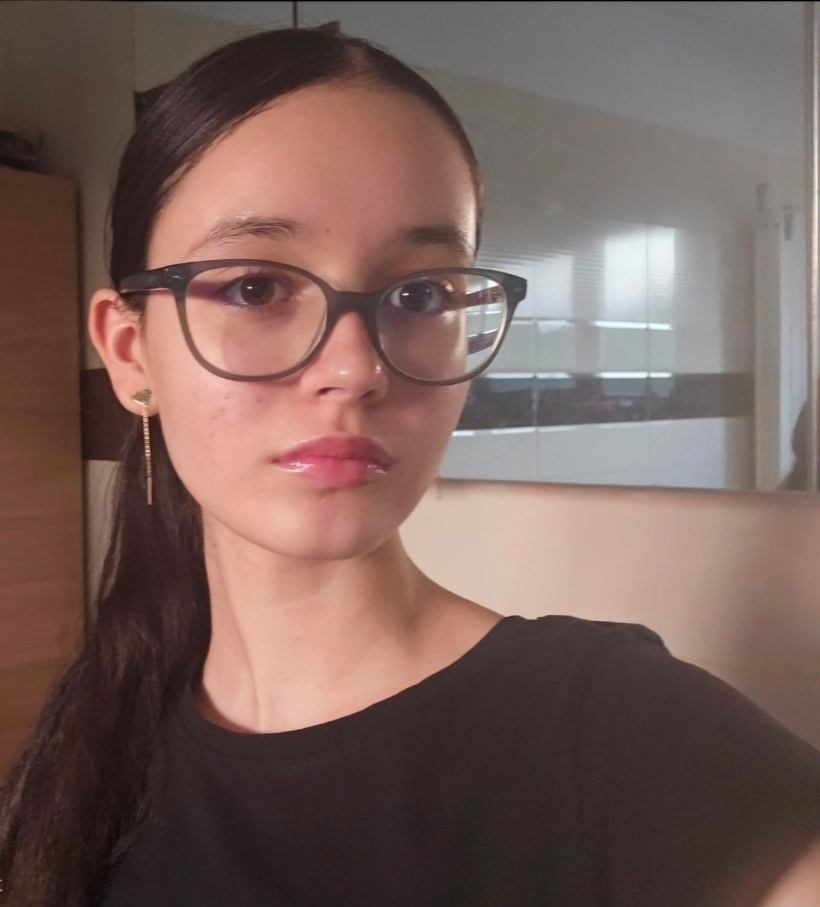
Ștefania Mihăilescu
Buna! Sunt Stefania, eleva in clasa a 10-a la ICHB. M-am indragostit de matematica inca din clasele primare cand am descoperit de cat de multa creativitate ai nevoie pentru a rezolva problemele. Particip la olimpiade unde am obtinut 4 medalii de aur si una de argint la natioanala, dar si o medalie de aur la jbmo. Pe langa asta, iubesc muzica, informatica, voleiul si sa pictez. Imi doresc foarte mult sa va ajut sa prindeti incredere in voi si sa invatam intr-un mediu cat mai relaxant. Ne vedem cu drag la cursuri!.
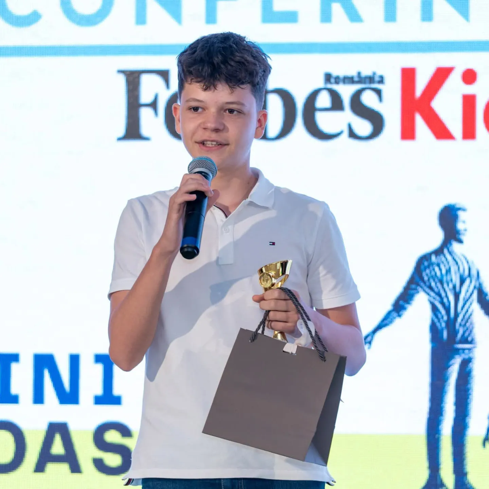
Tudor Mitran
Salut! Eu sunt Tudor și sunt la Colegiul Național "Emil Racoviță" Cluj, în clasa a 10-a. Pasiunea mea este, de când eram mic, matematica, și sper să vă ajut și pe voi să descoperiți această pasiune. Particip la olimpiade încă din clasa a 5-a și am reușit să adun, pe parcursul anilor, o medalie de bronz și 5 de aur la națională.Pe lângă matematică, îmi place mult să joc baschet, dar și alte sporturi, cum ar fi fotbalul, tenisul, voleiul și schiatul. De asemenea, îmi place să ascult muzică în timpul liber.Sunt convins că vom avea parte de multe lecții interesante împreună și că, în timp, veți ajunge să vedeți matematica altfel decât o vedeați până acum. ;)
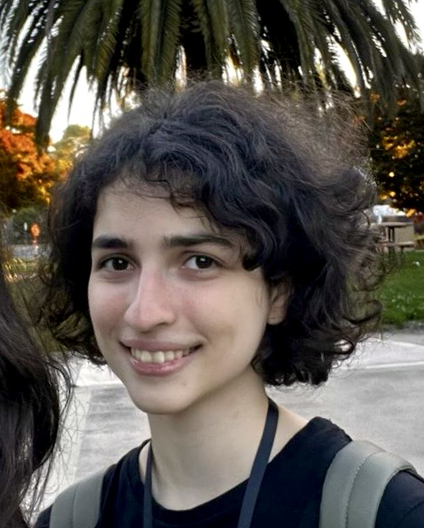
Maria Radu
Buna! Sunt Maria si sunt in clasa a 12-a la ICHB. La olimpiadele nationale de matematica am obtinut pana acum o medalie de aur, doua de argint si una de bronz. In timpul liber ma ocup si de lingvistica, citesc cat de mult pot si merg la plimbari interminabile. Cred ca veti ramane cu idei dragute in urma cursurilor pe care le vom face si de abia astept sa lucram impreuna! :)
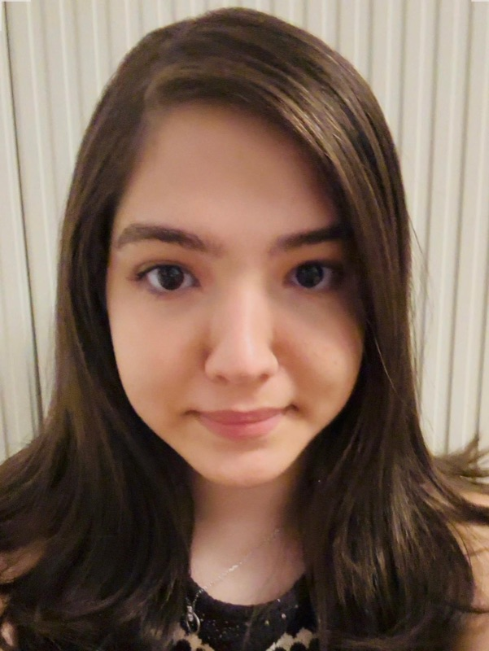
Ana Beatrice Păciu
Bună, mă numesc Ana și sunt elevă în clasa a 11-a la ICHB. Încă din clasele primare sunt pasionată de matematică și până acum am obținut medalii de aur și argint la olimpiada națională. Pe lângă matematică, îmi place să citesc, să schiez și să mă uit la filme. Abia aștept să lucrăm împreună și sper ca veți descoperi idei utile la curs!
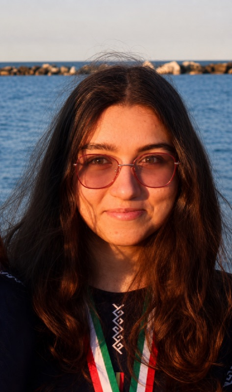
Ilinca Radu
Bună! Eu sunt Ilinca și sunt elevă în clasa a X-a la Colegiul Național Iași. Îmi place foarte mult matematica, mai ales geometria și particip la olimpiade, unde am obținut până acum 3 medalii de aur și 2 de argint la națională, dar și două medalii la JBMO în 2024 și 2025 (argint, respectiv aur). În afară de asta, îmi plac mult informatica, să schiez și pisicile. Vă aștept cu drag la curs, unde sper că veți descoperi idei noi. Și sper că veți iubi și mai tare matematica la final!!!
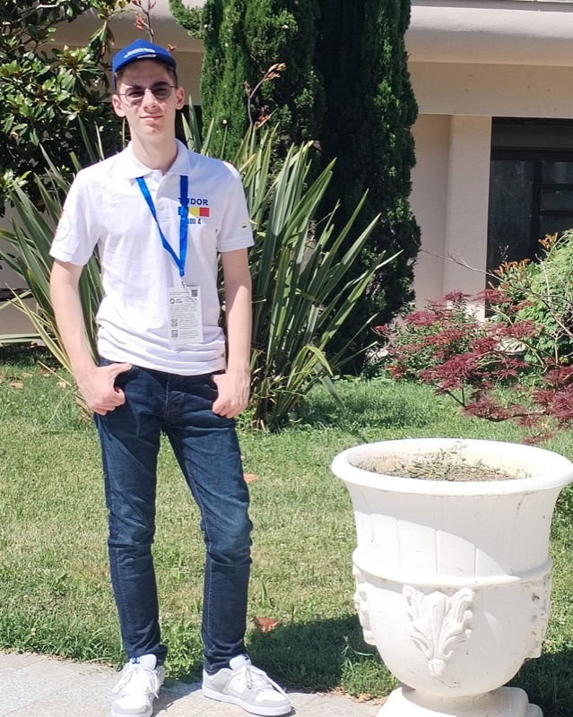
Tudor Chelaru
Salut! Sunt Tudor și sunt elev în clasa a 10-a la Colegiul Național Emil Racoviță din Iași. Particip la concursuri de matematică încă din clasa a 3-a și, personal, iubesc matematica pentru momentele acelea când îți iese o problemă grea după mult(uneori prea mult) timp de gândire, și îmi doresc să vă fac și pe voi să simțiți la fel la cursuri. Printre rezultatele mele de până acum se numără o medalie de aur și una de argint la JBMO și 4 medalii de aur și una de argint la ONM. Totuși, nu am încă nicio medalie în calitate de profesor, deci poate mă ajutați voi cu asta :))). Când nu fac mate, îmi place să mă joc sau să mă uit la Tenis(de câmp și de masă), să înot sau să mă joc pe calculator. Vă aștept la curs și sper să vă pot ajuta să realizați tot ce vă doriți în matematică (și nu numai)!
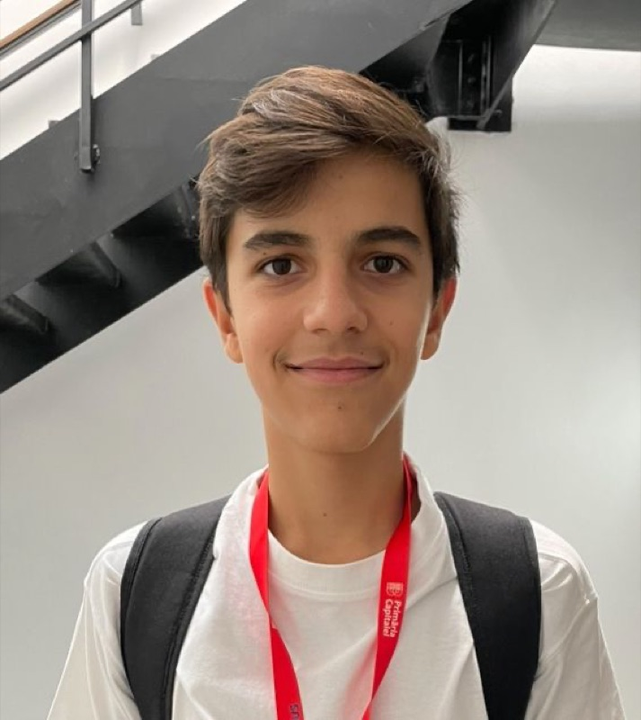
Octavian Boștinescu
Salut! Sunt Octavian și sunt în clasa a XII-a la ICHB. Până acum am reușit să obțin 3 medalii de aur, una de argint și una de bronz în cadrul Olimpiadei Naționale de Matematică. Îmi petrec timpul liber jucând tenis, ping-pong și FIFA. Sunt o persoană care pune multe întrebări când învață ceva nou și sper că așa sunteți și voi, pentru că de abia aștept să vă răspund!
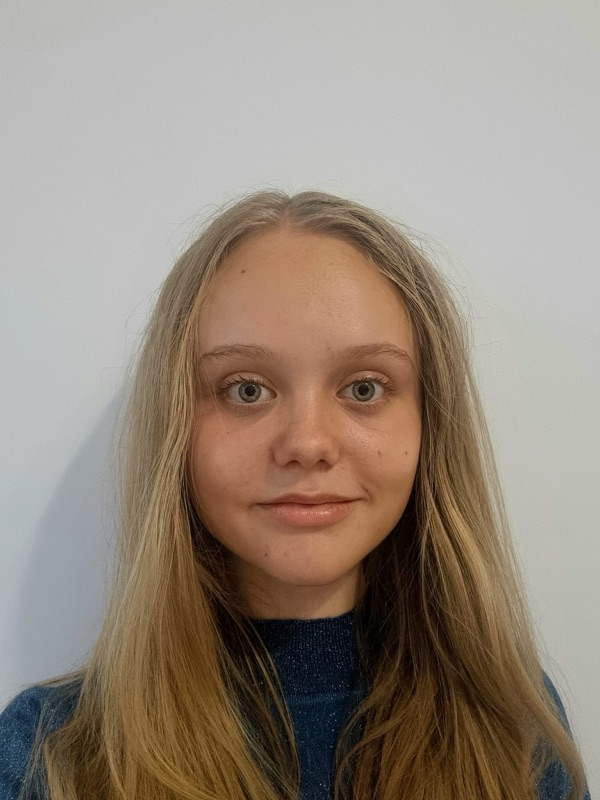
Carina Viespescu
Bună! Sunt Carina şi sunt elevă în clasa a XII-a la ICHB. Sunt pasionată de matematică, informatică si poezie. Cea mai recentă și importantă realizare a mea este medalia de aur de la EGMO 2026. Îmi place combo-ul matematică+ceai. :) De asemenea, ador sa patinez. Îmi doresc să vă împărtășesc bucuria de a afla idei şi tehnici noi şi să o pot face într-un mod util şi frumos în acelaşi timp!
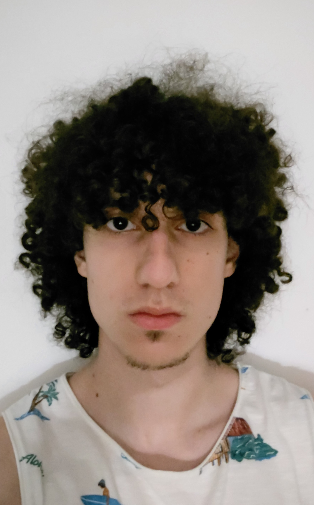
Andrei Șună
Salut, sunt Andi, in clasa a XII-a la ICHB. Imi place sa predau, dar mai ales sa explic soluții sau definiții, deoarece a justifica pașii unei rezolvări este sinonim cu a înțelege logica din spate. Impun sa adresați întrebări, deoarece altfel cursul este plictisitor pentru toata lumea. Sper ca acest curs sa suplimenteze antrenarea personală și sa va permita sa demistificati orice nelamuriri aveti!
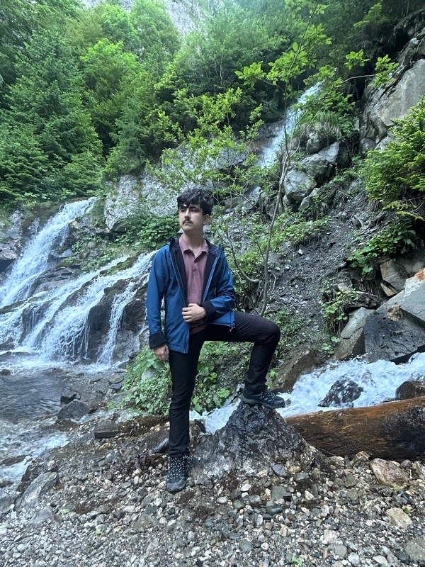
Alexandru Ciobotea
Salut! Mă numesc Alex și sunt elev în clasa a 12-a la ICHB. Cel mai mult mă pasionează geometria, și sper să vă pot face și pe voi să îi vedeți frumusețea în timpul pe care îl vom petrece împreună. În afară de matematică, îmi place să fac drumeții, plimbări lungi prin parc sau să încerc (cu o rată…modestă de succes) să gătesc. Aș dori să am la un moment dat șansa să vorbesc cu broasca țestoasă a lui David Tache, Christopher: pare foarte de treabă (cum, de altfel, sunt sigur că sunteți și voi :) ) . Până atunci însă, de-abia aștept să ne auzim la curs!
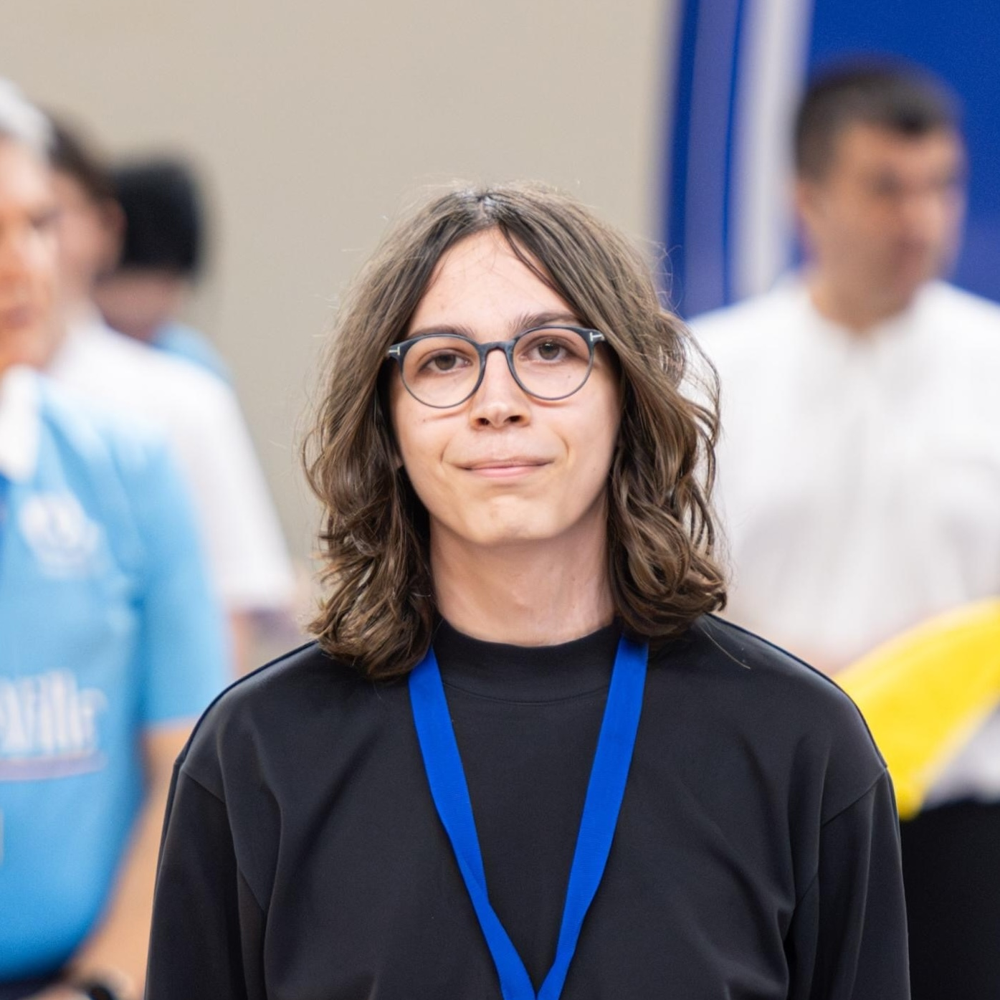
David Tache
Heyo! Ma numesc Tache David si sunt elev in clasa a XII-a la CN "Andrei Saguna" in Brasov (orasul ursilor). In timpul liber de obicei ascult muzica, cant la ukulele sau vorbesc cu broasca mea testoasa, Christopher. Viata e scurta, iubirea e trecatoare, iar fericirea o emotie superficiala... dar matematica e eterna (sau asa mi-a fost spus), deci propun sa descoperim impreuna cate ceva :).
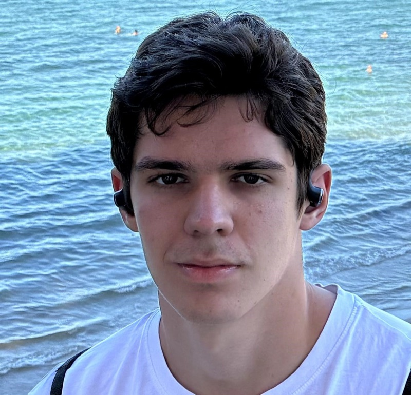
David Marghidan
Salut! Sunt David, elev în clasa a XII-a la ICHB. Cele mai importante rezultate ale mele sunt o medalie de aur la IMO 2026 și o medalie de argint la IMO 2025.Cred că, în matematică, modul în care alegeți să învățați este cel puțin la fel de important ca timpul pe care îl investiți. Îmi doresc să vă ajut să rezolvați probleme dificile, dar și să vă formați un mod de gândire și de lucru cât mai eficient, care trebuie să fie, în primul rând, plăcut.
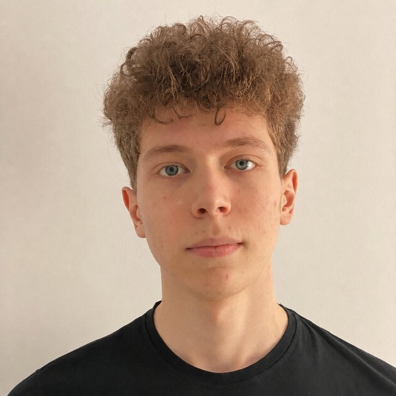
David Mathe
Salut! Sunt David, elev în clasa a XI-a la Liceul Teoretic Internațional de Informatică București. Particip la olimpiade din clasa a VII-a, unde am obținut 3 medalii de aur și una de argint la națională, dar și o medalie de argint la JBMO în 2024. Pe lângă matematică, îmi plac pinguinii, să mă joc ping-pong și să schiez. Vă aștept cu drag la curs!
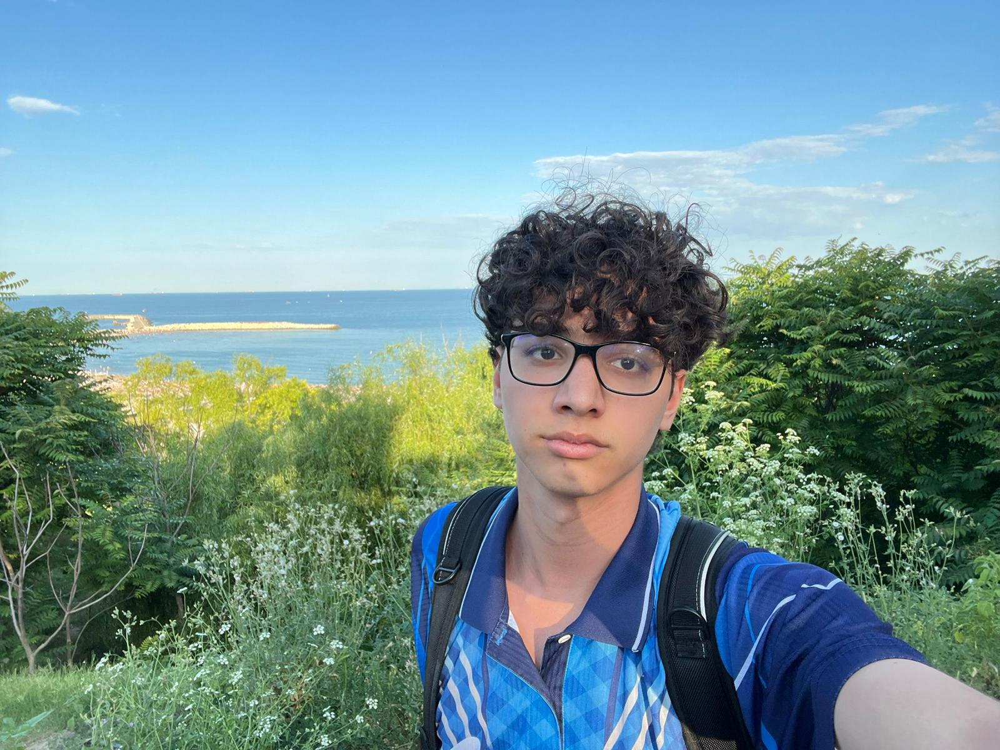
Amedeo Vană
Bună, eu sunt Amedeo. Sunt elev in clasa a X-a la ICHB si in ultimii ani am participat la olimpiadele de matematica si fizica. Imi mai place sa ma uit la filme, sa ascult muzica si sa joc fotbal. Anul acesta am ocazia sa fiu alaturi de voi la ore. Sper sa ne intelegem bine, iar ideile si problemele pe care le vom parcurge la cursuri sa va convinga ca matematica este frumoasa si poate fi invatata intr un mod placut:)
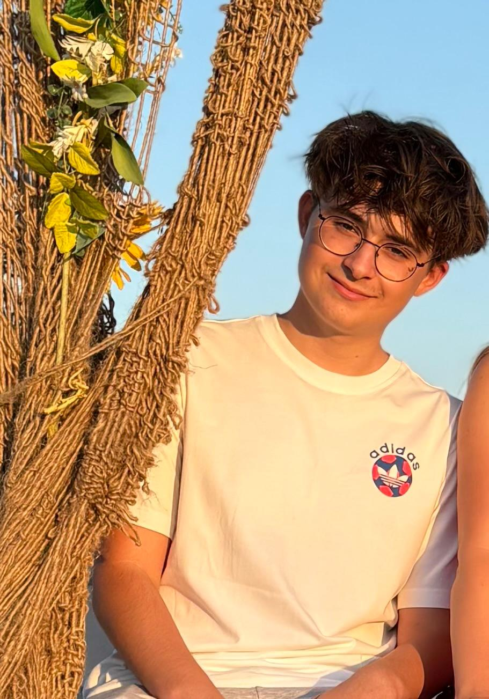
Alecsandru Dicu
Buna! Sunt Alecsandru, elev in clasa a X-a la ICHB. Sunt pasionat de matematica, si in special de geometrie, iar la fiecare participare la olimpiada nationala am obtinut medalii de aur, argint sau bronz. Dincolo de mirajul premiilor si al concursurilor, sper ca, explicându-va matematica asa cum o vad eu, sa va pot transmite putin din pasiunea mea si, poate, sa va ajut sa descoperiti frumusetea unei lumi in care fiecare problema este, de fapt, o invitatie la a gandi.
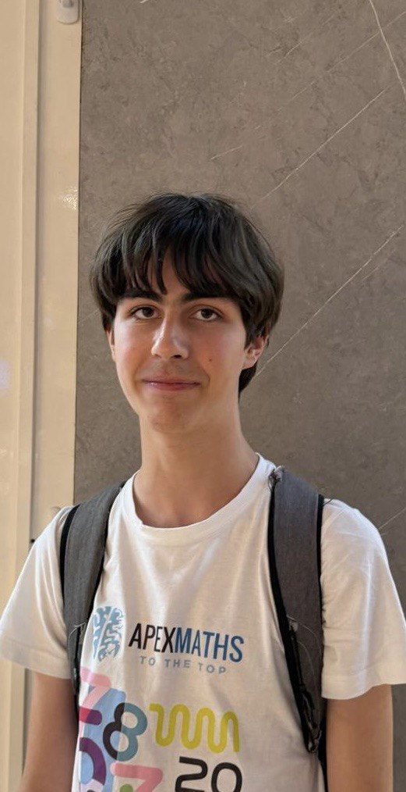
Radu Posea
Bună bună! Sunt Radu și sunt elev in clasa a 11-a la ICHB. Particip și mă descurc cat de cat binișor la concursuri de matematică de câțiva ani. Sper să fiu genul de profesor pe care il puteți întreba orice și să fie in stare să vă dea un răspuns competent. Abia aștept să înceapă anul și să ne vedem la curs!!
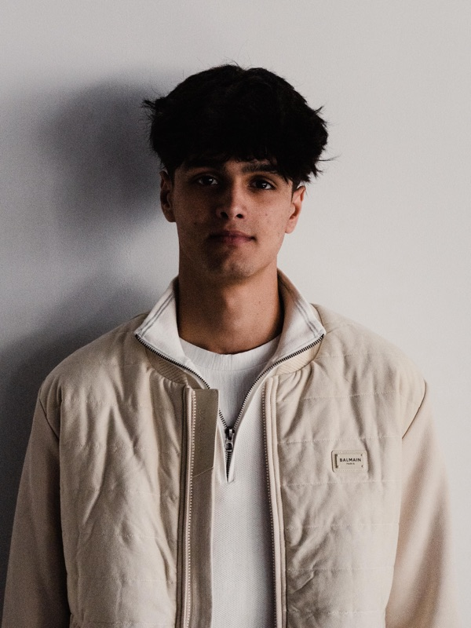
Mihai Moldovan
Bună! Sunt Mihai și sunt elev în clasa a XI-a. Sunt pasionat de matematică și, de-a lungul anilor, am reușit să obțin medalii la trei olimpiade naționale. Acum îmi doresc să împărtășesc din ceea ce am învățat copiilor curioși să descopere frumusețea matematicii.
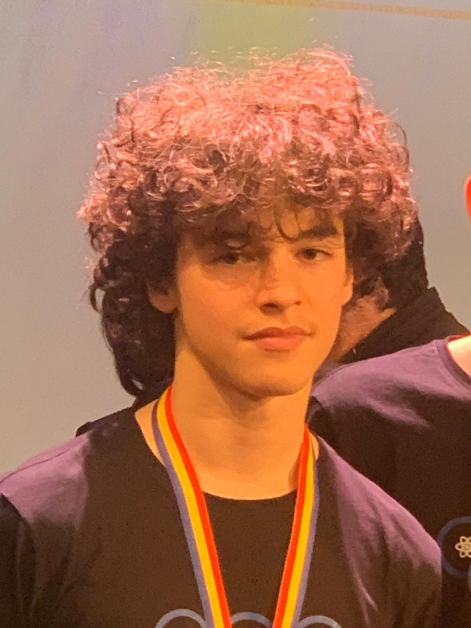
Șerban Petruș
Buna, eu sunt Șerban și sunt elev la ICHB in clasa a IX-a și înainte sa mă mut la București, in clasa a 8-a, eram in Satu Mare la Colegiul Național Mihai Eminescu.Particip la olimpiada de mate din clasa a 5-a. Am mai participat la multe alte concursuri. De-abia aștept să vă predau!!
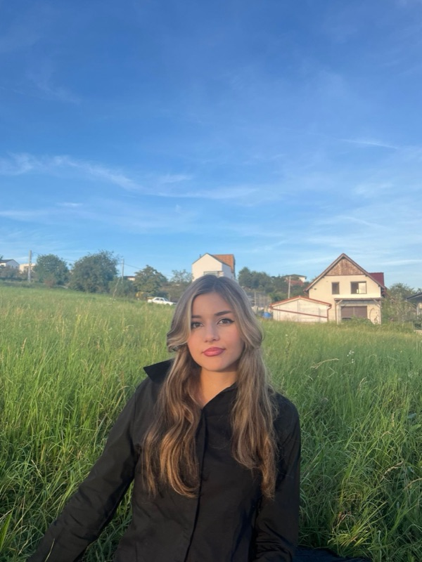
Antonia Silaghi
Bunăă, eu sunt Antonia, sunt elevă în clasa a XI-a la Colegiul Național Emil Racoviță din Cluj-Napoca. În clasa a VII-a, prin orele de excelență, mi-am descoperit pasiunea pentru matematică, și în special geometrie. De atunci, aceasta a devenit pasiunea mea principală și tot ce am făcut în ultimii ani a fost în scopul de a-mi dezvolta cunoștințele matematice. Am participat la nenumărate concursuri și olimpiade, lucru care m-a împins și spre a ajuta pe alții în a înțelege materia, deci abia aștept să ne cunoaștem și să lucrăm împreună!
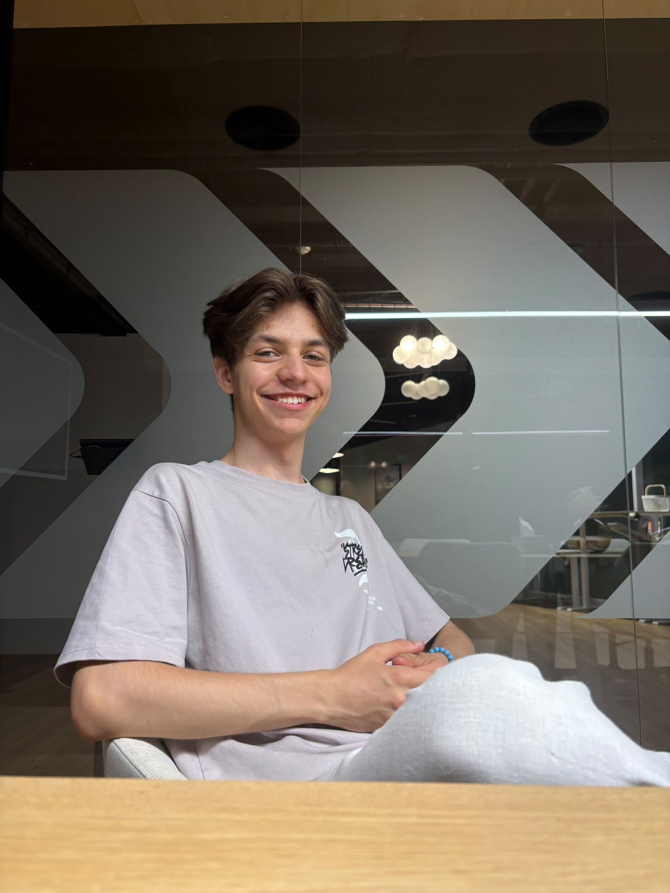
Vladimir Tănase
Salut!! Sunt Vladimir, elev în clasa a XI-a la ICHB. Mi-am descoperit pasiunea pentru matematică în clasa a VII-a, la prima calificare la olimpiada națională — atunci am realizat că matematica e singura care reușește să dea atât de mult sens lucrurilor abstracte :)) Printre cele mai importante rezultate ale mele se numără două medalii de bronz la etapa națională și diverse premii la concursuri interjudețene. În afara matematicii, îmi plac cafeaua, BJJ-ul și să cânt la chitară :D Vă aștept cu drag la curs!!!
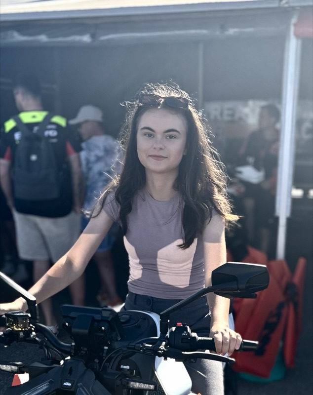
Laura Motocescu
Heii, eu sunt Laura si sunt eleva in clasa a X-a la ICHB. Sunt pasionata de matematica, participand an de an la concursuri si olimpiade. Pana acum am obtinut doua medalii de argint si una de bronz la Olimpiada Nationala de Matematica si nota 10 la EN, rezultate care mi-au dat incredere si m-au motivat sa continui. Printre pasiunile mele se numara si tenisul, vizionatul filmelor, cantatul la chitara si voluntariatul, mai ales predatul colegilor mei mai mici. Sunt o persoana cooperanta si imi va face mare placere sa sustin cursul de pregatire pentru Evaluarea Nationala. De abia sa va cunosc si sa lucram impreuna! :))
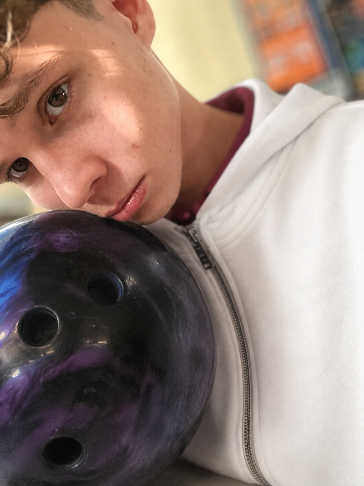
Teodor Ștefan Oancea
Salut! Mă numesc Oancea Teodor Ștefan și sunt pasionat de matematică, în special de matematica de olimpiadă. Am participat de-a lungul timpului la numeroase concursuri și olimpiade, iar una dintre experiențele mele cele mai importante a fost obținerea medaliei de aur la JBMO. Îmi plac în mod deosebit geometria și combinatorica, dar, mai mult decât rezultatele în sine, îmi place procesul de a înțelege de ce funcționează o idee și cum poate fi descoperită. Ca profesor, încerc să explic lucrurile intuitiv și să construiesc ideile pas cu pas, nu doar să prezint formule sau soluții gata făcute. Mi-aș dori ca elevii mei să ajungă să vadă problemele de matematică mai degrabă ca pe niște puzzle-uri interesante decât ca pe o colecție de reguli de memorat.

Mateo Irimia
Salut! Sunt Mateo și sunt elev in clasa a 10-a la Colegiul Național Emil Racoviță din Iași. De când eram mic mi-am dorit să cunosc și să înțeleg cât mai multe concepte din Univers, ajungând astfel să iubesc fizica și matematica. Particip încă din clasa a 3-a la olimpiade si concursuri, iar dintre cele mai notabile rezultate aș menționa 2 medalii de bronz la ONF și 4 medalii de argint la ONM. O mare parte din timpul meu liber o petrec jucând/dezvoltând jocuri-video. De asemenea, ador voleiul, fotbalul, cititul și gătitul, în special mâncare asiatică. Vă aștept cu drag la curs unde sper să vă stârnesc curiozitatea să explorați cât mai mult! Să nu vă fie frică să vă aventurați! :)
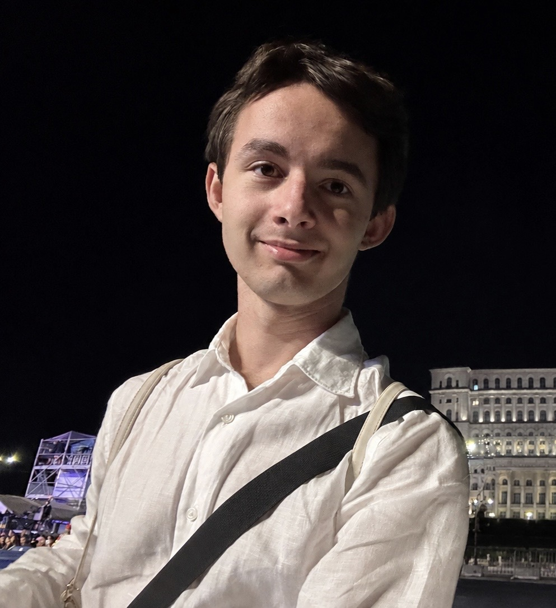
Alexandru Paneș
Buna! Sunt Alexandru Panes, elev in clasa a 11-a la ICHB. Am luat cateva medalii la ONF si ONM, iar anul acesta o sa incerc sa va transmit cat mai mult din fizica pe care am invatat-o. In afara de fizica si matematica, imi plac sporturile de iarna (ski, patinaj), jocurile video si sa ma uit la seriale. Ne vedem la cursuri!
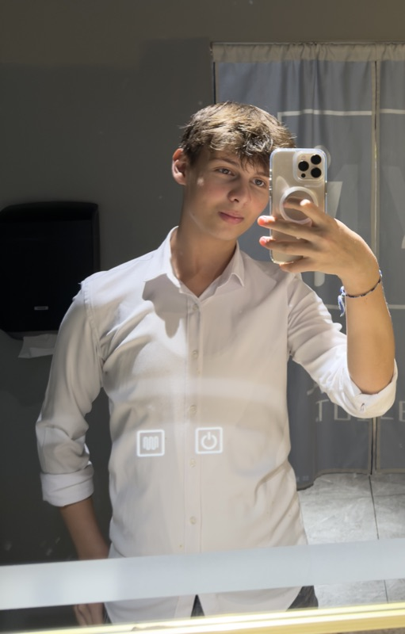
David-Gabriel Guralivu
Bună! Sunt David, elev în clasa a XI-a la ICHB, la clasa de fizică. De câțiva ani buni, (din clasa a 3-a) particip la olimpiade și concursuri la care am diferite rezultate, precum 3 medalii de argint la ONF și o medalie de bronz la ONAA, dar și altele... mai puțin așteptate, precum diverse mențiuni și medalii la olimpiade de lingvistică, chimie, STEM, chiar și concursuri de literatură și proză. Concursurile sunt importante, acestea te motivează să îți depășești limitele, să fii competitiv, să-ți dorești mai mult și să încerci mai tare, motiv pentru care vă încurajez cu mare drag să participați! (nu ezitați, dacă de la început nu vă acordați singuri șanse, în orice domeniu, niciodată nu veți știi cu adevărat ce puteți!) Vă aștept pe cât mai mulți dintre voi, entuziasmați de cunoaștere, la cursul de fizică, unde vom reuși să înțelegem cât mai multe despre lumea ce ne înconjoară, dar ne vom pregăti și de competițiile de fizică! Este o mare plăcere pentru mine să-mi pot împărtăși cunoștințele de fizică! :) (P.S.: Să nu vă fie frică să puneți întrebări, aștept cât mai multe!)
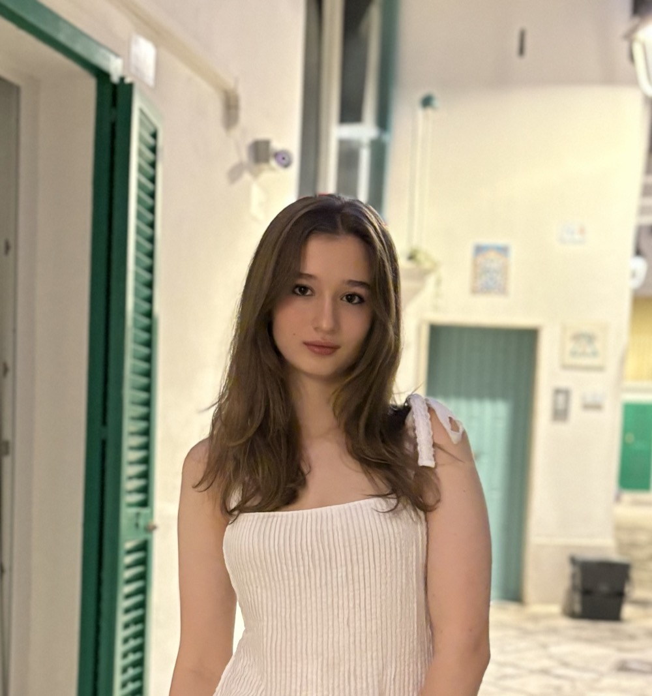
Maria Ghinculov
Bună! Sunt Maria, elevă în clasa a 11-a la ICHB. Particip la olimpiade de câțiva ani, iar anul acesta am obținut o medalie de argint la ONF și m-am calificat în lotul lărgit de juniori. Deși fizica mi-a testat uneori și răbdarea, nu doar cunoștințele, are o mulțime de părți frumoase pe care sper să le descoperim împreună la curs. Vă aștept cu drag!
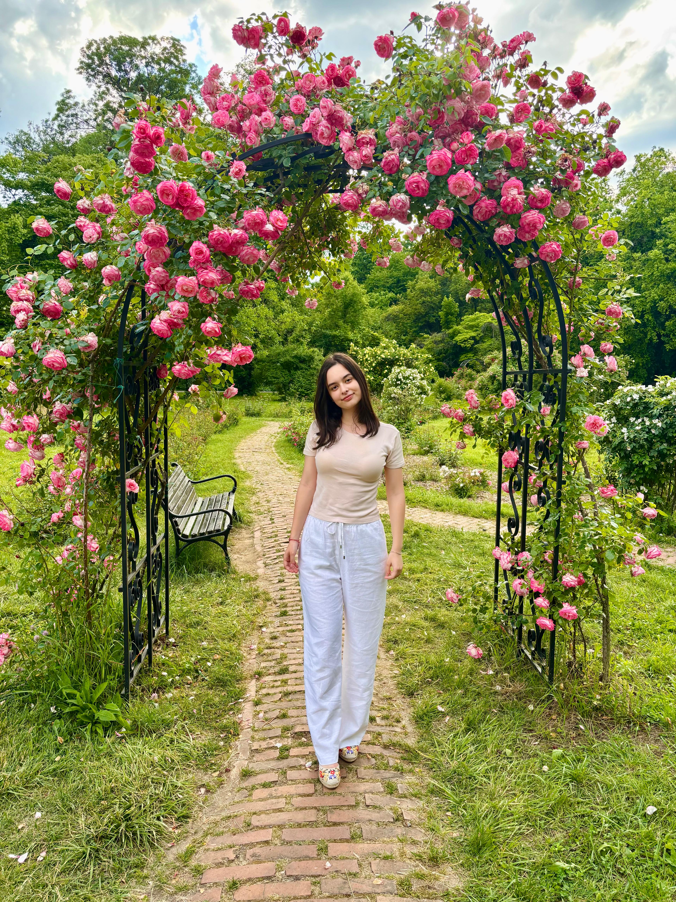
Diana-Ilinca Negreanu
Buna!! Sunt Diana, elevă în clasa a 12-a la ICHB. Particip de câțiva ani la olimpiade, iar printre realizările mele se numără o medalie de argint la Balcaniada de Fizică și 5 medalii de aur la ONF și ONAA. Anul acesta voi reprezenta România la EuPhO și APhO. În timpul liber cânt la pian, citesc mult (în principal literatură clasică și filozofie) și mă joc ore în șir cu telescopul. :) Vă aștept cu drag la curs, unde sper să vă fac să îndrăgiți multitudinea de fenomene interesante pe care le vom explora!
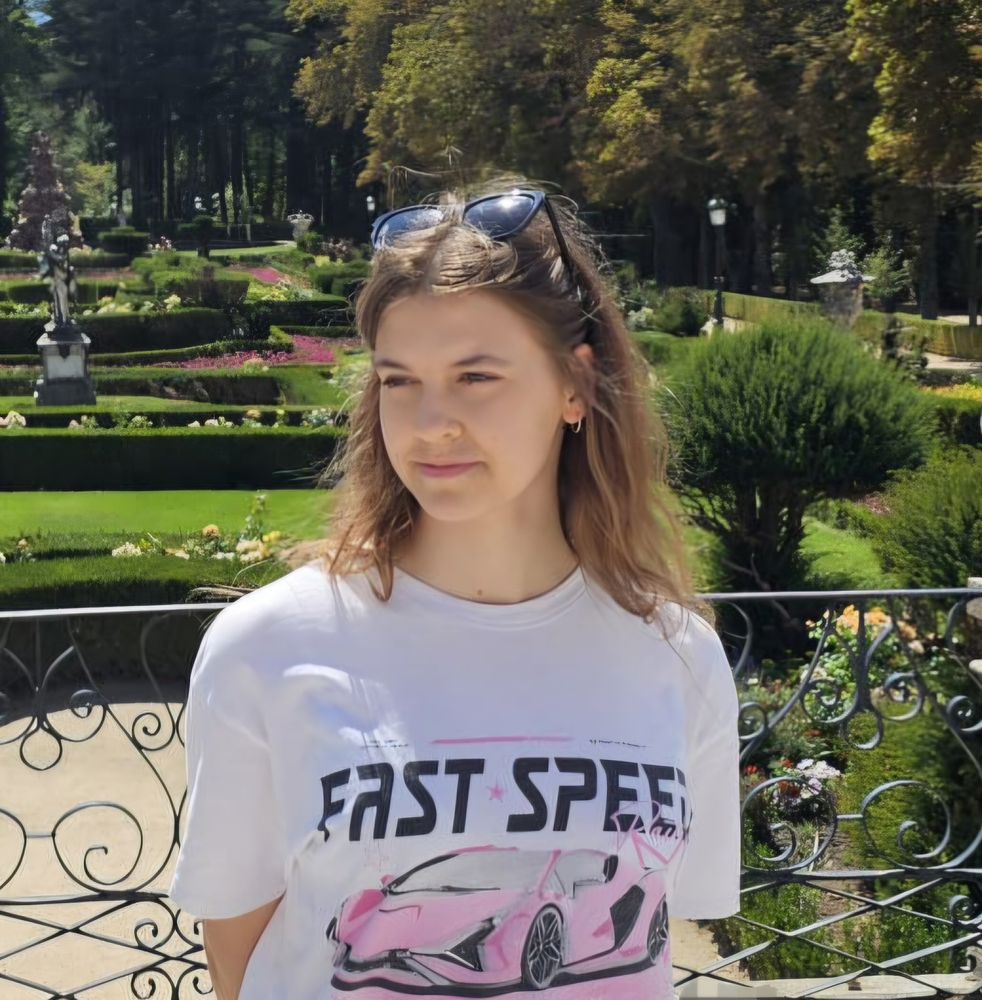
Rosa Sofian
Buna!! Ma numesc Rosa si sunt eleva la ICHB in clasa a 10-a. Am inceput sa ador informatica de cand aveam 9 ani si particip la ONI din clasa a 5-a. Pana acum am luat 3 medalii de bronz si una de argint. Voi face orele cat mai clare si interesant pentru voi, si pana la final sper sa indragiti aceasta materie la fel de mult ca mine! Sunt o persoana rabdatoare si voi raspunde la toate intrebarile cu mare drag. Cand am timp liber citesc, ma plimb in parc, ma uit la filme si gatesc. Va astept cu mare drag la curs, sper sa va placa!!!
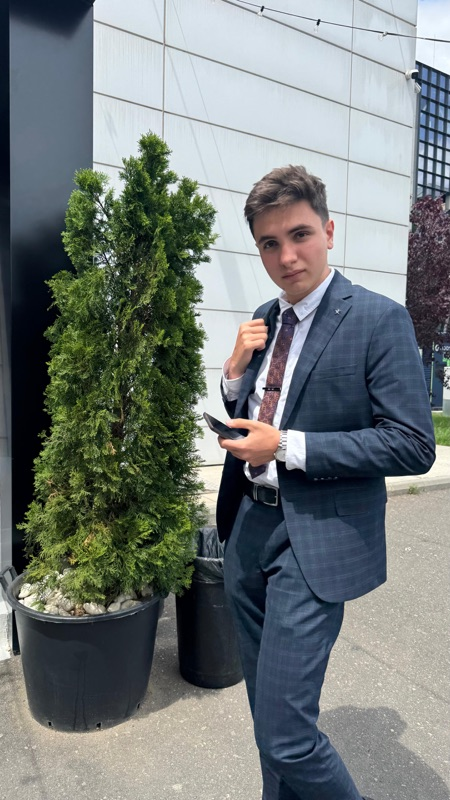
Iustin Maican
Salut! Mă numesc Iustin și sunt elev în clasa a XI-a la Liceul Teoretic Internațional de Informatică București. Îmi place să înot, să joc tenis și să citesc despre istorie. În afară de aceste activități, sunt foarte pasionat de matematică și informatică. De-a lungul anilor, am obținut o medalie de bronz, trei medalii de argint și o medalie de aur la Olimpiada Națională de Informatică, precum și două medalii de argint la Olimpiada Națională de Matematică. Vă aștept cu mare drag la curs!
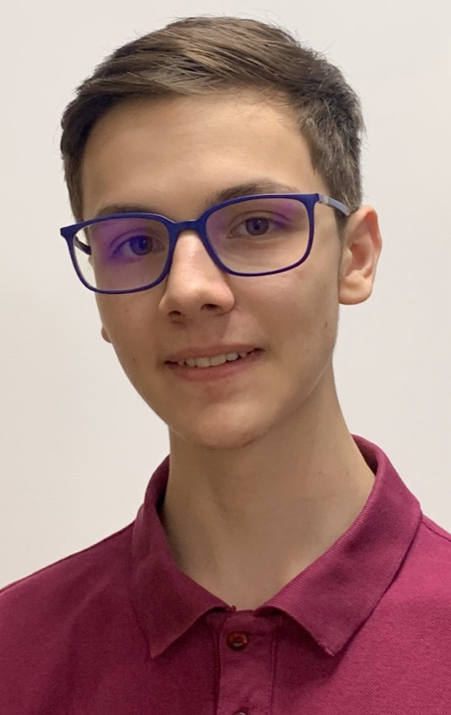
Rareș Drăgușanu
Bună ziua! Sunt Rareș, elev în clasa a 11-a la ICHB și mare fotbalist. În anii trecuți, am obținut mai multe medalii la olimpiade, printre care una neoficială de argint la JBOI și una oficială la JBMO. În afară de fotbal, tenis, ski și alte sporturi, îmi plac foarte mult matematica, informatica și fizica, pentru că, dacă știi soluția, orice problemă e ușoară. Sper să aflați cât mai multe idei la cursuri, să puneți multe, multe întrebări, iar când vă întâlniți cu o problemă, să vă amintiți de alta.
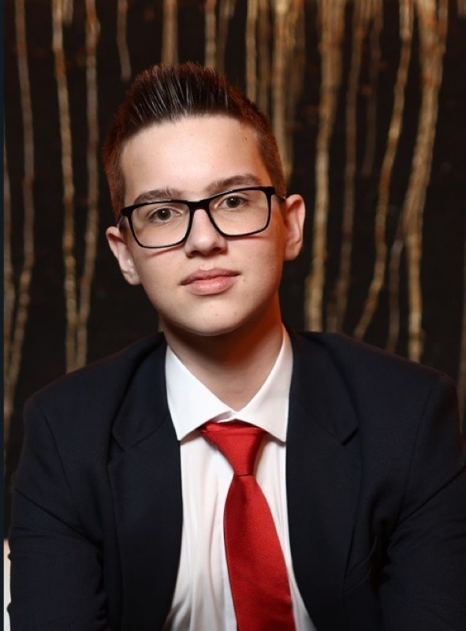
Luca Mureșan Valentin
Salut, mă numesc Luca. Sunt elev în clasa a XI-a la Liceul Teoretic Internațional de Informatică București. Îmi place să joc fotbal, să merg cu bicicleta și recent am învățat să jonglez. În anii trecuți am câștigat de 4 ori Olimpiada Naționala de Informatică și am obținut medalii de argint și aur la concursuri precum EJOI, JBOI, RMI, Shumen, Info(1)cup, etc. Vă aștept cu mare drag la curs, sper să vă placă!
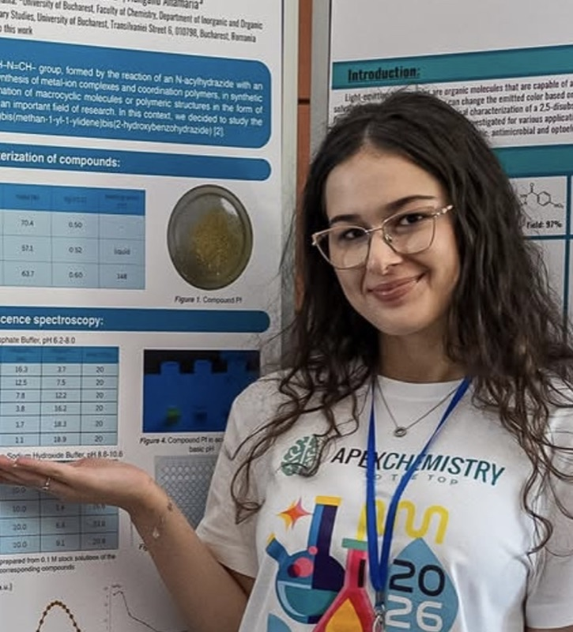
Caterina Maria Zetu
Hey! Sunt Caterina și sunt elevă în clasa a XI-a la ICHB. Aș putea să enumăr multe competiții de chimie și mate la care am participat și am obținut rezultate frumoase (anul acesta mențiune MEN la ONCH și mențiuni speciale în anii anteriori). Dar cred că mult mai util și relevant pentru voi este capacitatea de a vă explica lucrurile pe înțelesul vostru, astfel încât chimia să devină simplă, logică și (promit!) chiar frumoasă. Fiind al treilea an consecutiv ca mentor la clasa a 7-a la Limitless, cea mai mare bucurie a mea va fi să văd rezultatele voastre la competițiile de chimie. Anul acesta am avut o mare bucurie, una dintre cursantele mele a obținut Mențiune MEN la prima ei participare la ONCH, fiind a 7-a pe țară! Când nu sunt printre reacții, îmi place să cânt la pian și să joc tenis (de câmp și de masă) :) Vă aștept cu mult entuziasm la cursuri în număr cât mai mare!
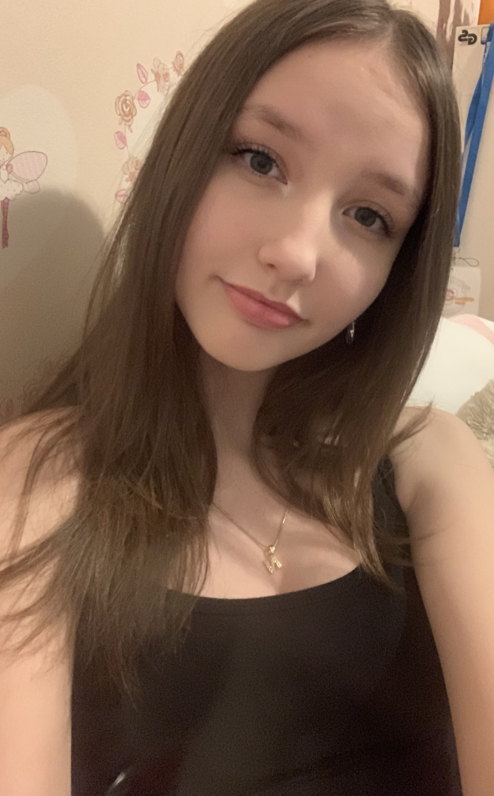
Natalia Panciu
Heei, sunt Nati și sunt elevă în clasa a X-a la ICHB. Am participat la mai multe olimpiade și concursuri de-a lungul gimnaziului, la diferite materii, însă chimia m-a atras în mod special, încă de la prima oră din clasa a VII-a. Printre rezultatele mele se numără o mențiune MEN în clasa a IX-a, precum și două Mențiuni Speciale, obținute în clasele a VII-a și a VIII-a. În anii trecuți, cel mai mult mi-a plăcut partea practică, să văd cum tot ceea ce scriu pe foaie prinde viață. Sunt o persoană curioasă și îmi place să pun multe întrebări, iar la ore mi-ar plăcea să fiți și voi la fel de curioși și să nu vă fie teamă să întrebați orice vă trece prin minte. Chimia anorganică mi-a plăcut foarte mult, chiar dacă este destul de complicată, și mi-ar face mare plăcere să vă ajut să descoperim împreună că, pe cât este de grea, pe atât este de frumoasă. Vă aștept cu mare drag la cursuri!
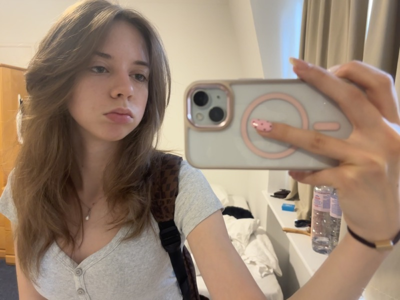
Ioana Rimbaș
Salut! Sunt Ioana, elevă în clasa a X-a la ICHB. Am participat și la etapele naționale ale olimpiadelor de chimie, încă din clasa a VII-a, când am luat Mențiune Specială. Am participat la Olimpiada de Științe pentru Juniori tot din clasa a VII-a, iar în clasele a VIII-a și a IX-a am obținut Mențiune MEN și calificare în lotul lărgit. Am obținut locul I și medalia de aur la Chimie și Biologie la finala mondială a NEO Science Olympiad din New York, medalia de aur la Științe la International STEM Olympiad din Roma și Premiul I la Avogadro Chemistry Olympiad. La cursuri mi-ar plăcea să fim într-o atmosferă relaxată, interactivă, plină de idei și curiozitate. Nu trebuie să vă fie teamă să adresați chiar și întrebările care vi se par prea simple, deoarece eu voi încerca să răspund la fiecare cât mai direct și corect. Abia aștept să ne cunoaștem și să vă arăt cât de surprinzătoare poate fi chimia!
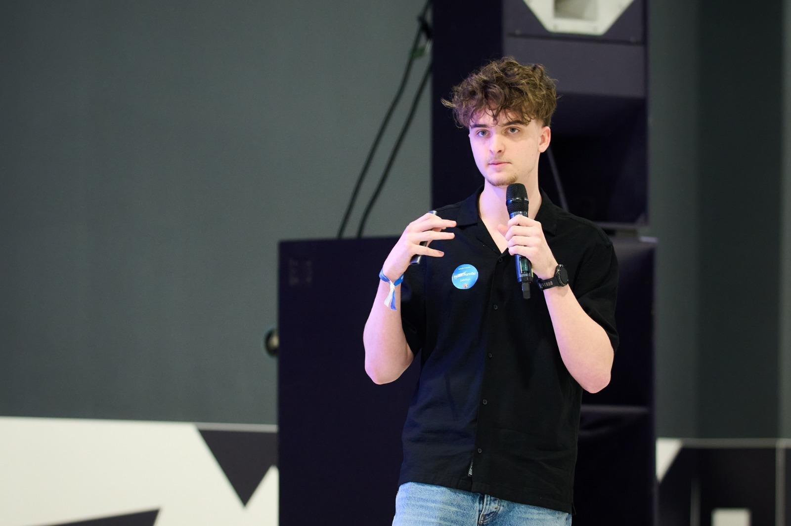
Matei Farcau-Bobon
Salut! Sunt Matei și sunt elev în clasa a 11-a la Liceul Teoretic Internațional de Informatică București. Particip la olimpiade și concursuri de chimie încă din clasa a 6-a, când am realizat că ador această materie (totul a început de la un science film). Promit că o să încerc să fac cursurile cât mai funny și intriguing, și vreau să vă ajut să vedeți chimia ca pe o artă, dacă nu este deja așa. Am ținut un streak de mențiuni până acum în clasa a 10-a inclusiv, am participat la ONSJ în a 7-a și a 8-a, am o medalie de bronz la ITO și la ITCHO și voi reprezenta România la IACHO anul acesta. Pe lângă asta, îmi mai place mult să joc tenis de câmp, să înot și să schiez. Vă aștept la curs și sper că o să vă pot ajuta să explorați mai mult ceea ce vă place.
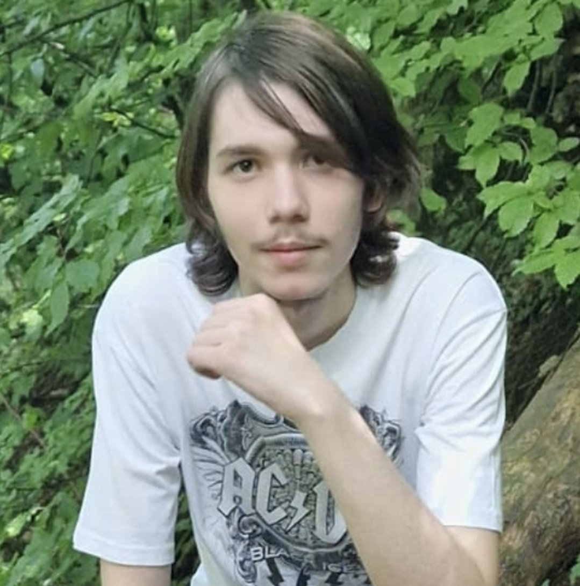
Cezar Rentea
Hello! Mă numesc Rentea Cezar și sunt elev în clasa a X-a, iar pasiunea mea pentru chimie s-a instaurat încă din primele ore. Multe, multe reacții mai târziu (și câteva experimente ce ar încălca OSHA standards), mă aflu aici, la fel de curios, dar și entuziasmat să vă ghidez prin noțiunile comune până la ascunse (sau prea des misinterpreted) ale chimiei! Drept acreditări, câteva dintre realizările mele sunt: Locul I la Olimpiada Națională de Chimie, Locul III la Concursul ,,Nenițescu" (anorganică, IX-XII), Bronz la Yakutia, Rusia... și (cu acordul vostru) conducerea a cât mai mulți elevi din România în "tainele chimiei". Dacă aveți asemenea aspirații, de ce să nu fie următoarea oprire chiar podiumul :) Vă aștept la curs!
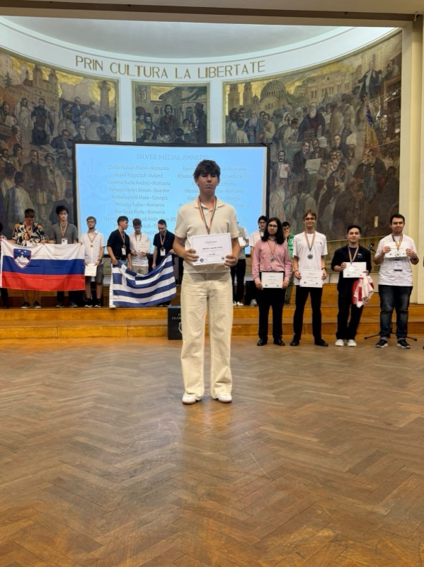
Petru Apostol
Salut! Eu sunt Petru și sunt elev în clasa a 10-a la ICHB Pallady. Sunt pasionat de informatică de mai mulți ani, iar în ultima perioadă m-am apropiat tot mai mult de inteligența artificială, atât prin concursuri, cât și prin proiecte personale. Am participat la Olimpiada Central-Europeană de Inteligență Artificială și la alte concursuri de AI, iar pe lângă partea de competiție îmi place foarte mult să experimentez cu modele, să înțeleg cum funcționează și să le folosesc pentru a construi proiecte reale. La curs mi-ar plăcea să vă arăt că AI-ul nu înseamnă doar să folosești Claude, ci și să înțelegi ideile din spatele modelelor și să ajungi să construiești singur lucruri interesante cu ele sau sa rezolvi probleme de olimpiada. În afara informaticii, îmi plac fotbalul, baschetul și jocurile pe calculator. Vă aștept la curs și sper să descoperim împreună cât de multe lucruri interesante se pot face cu AI-ul!
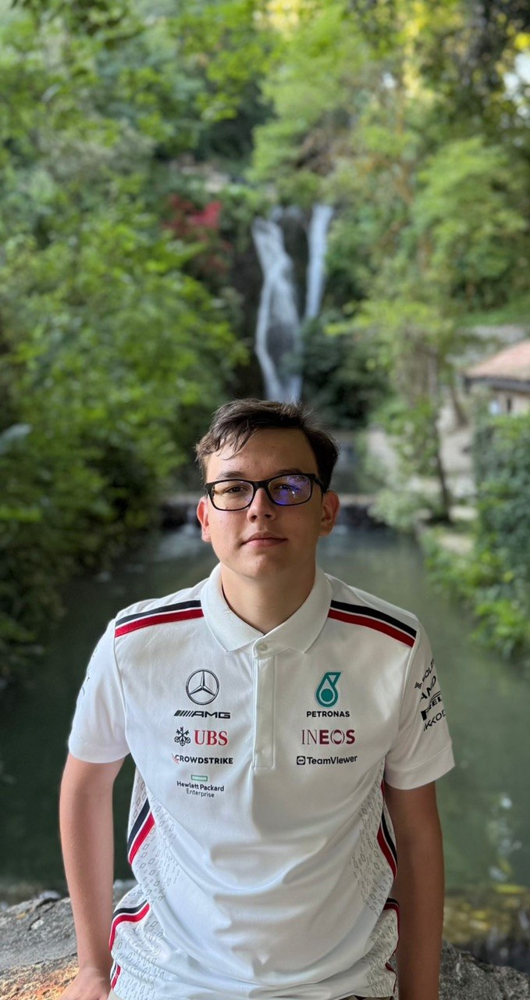
Mihnea Stoica
Salut! Sunt Mihnea, sunt elev în clasa a XI-a la ICHB, mă pasionează inteligența artificială din clasa a noua, obținând medalia de argint la Olimpiada Internațională de AI și medalie de aur la ONIA și ROAI. În plus, mă pasionează IoT, motorsports și jocurile video :)). Vă aștept cu drag la cursurile de inteligență artificială de anul acesta!